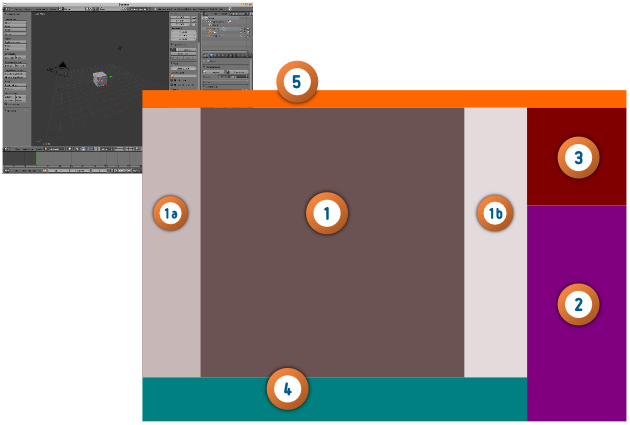
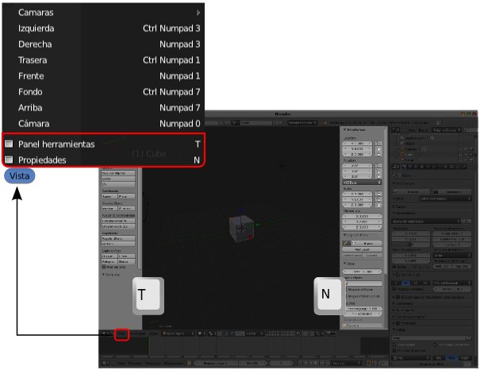
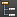
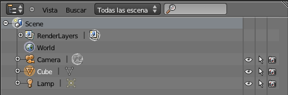
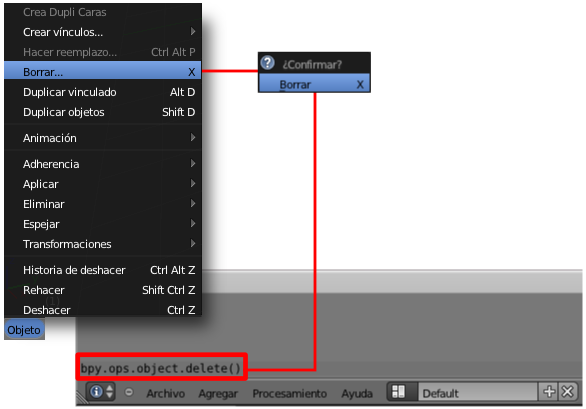

Entorno Default
Como ya sabemos, Blender se abre con el entorno de trabajo Default.
En los apartados siguientes vamos a profundizar en cada una de las diferentes áreas de trabajo en las que se divide este entorno, pero no vamos a dejar pasar la oportunidad de hacer una primera aproximación de carácter general.
- El área central (1) es el espacio destinado a la visualización del proyecto 3D. El nombre concreto del editor es Vista 3D. En esta área se pueden hacer visibles o no visibles dos cuadros con gran variedad de recursos.
- El cuadro dentro de Vista 3D situado a la derecha (1a) se denomina Herramientas. Se hace visible/no visible con Vista/Herramientas aunque el atajo de teclado "T" es mucho más efectivo (para que este atajo de teclado tenga efecto es necesario que el cursor del ratón esté en la zona Vista 3D).
- El cuadro que aparece en la parte derecha de Vista 3D (1b), y que no aparece en Blender por defecto, se denomina Propiedades y accedemos a él con Vista/Propiedades o con el atajo de teclado "N".

- En la parte derecha de la interfaz está uno de los editores más usados; se trata de Propiedades (2). En este punto no nos queda más remedio que estar en desacuerdo con la traducción por dos motivos:
- Ya hemos mencionado que uno de los cuadros integrados en Vista 3D recibe ese nombre.
- Tradicionalmente a esta sección se la ha denominado Panels (en la versión original en inglés) y toda la documentación generada hasta la llegada de la traducción se ha referido a ella como Paneles. Nos referiremos por tanto a partir de ahora a la secuencia de iconos de este editor como Panel Mundo , Panel Texturas ... y en ellos encontraremos todo lo necesario para editar el asunto que queramos en cada momento.
- Encima de los paneles se encuentra el editor Listado  (3). En Blender: 3D en la Educación no llegaremos a utilizarlo. Permite acceder a cada elemento de la escena con rapidez además de determinar desde allí algunas de sus propiedades como la visibilidad/no visibilidad. Un vistazo rápido nos dice que en nuestra escena por defecto hay una cámara (Camera), un cubo (Cube) y un punto luminoso (Lamp) además de un entorno para todo ello (World). La información visual nos dice que el cubo está seleccionado ya que su texto se muestra blanco. Podemos cambiar de objeto seleccionado desde aquí.

- La zona inferior de Vista 3D está destinada al editor Línea de tiempo (4). Recordemos que Blender es una herramienta que permite animación. Desde aquí se concreta en qué fotograma nos encontramos tan solo con desplazar la línea vertical de color verde.
- Y en la zona alta de la interfaz se encuentra el editor Info (5) cuya importancia es trascendental al albergar el clásico menú Archivo. Este área de trabajo puede agrandarse hacia abajo pero curiosamente en su interior no encontraremos nada en este momento porque no hemos hecho ninguna edición. Si eliminamos el cubo con el menú Objeto/Borrar (del editor Vista 3D) y confirmamos, nos aparecerá la orden interna que ha gestionado Blender para la operación.
